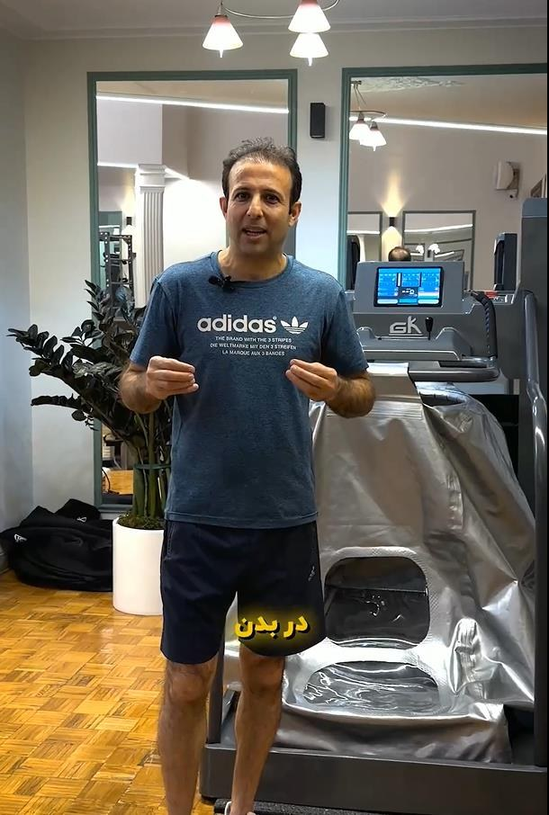
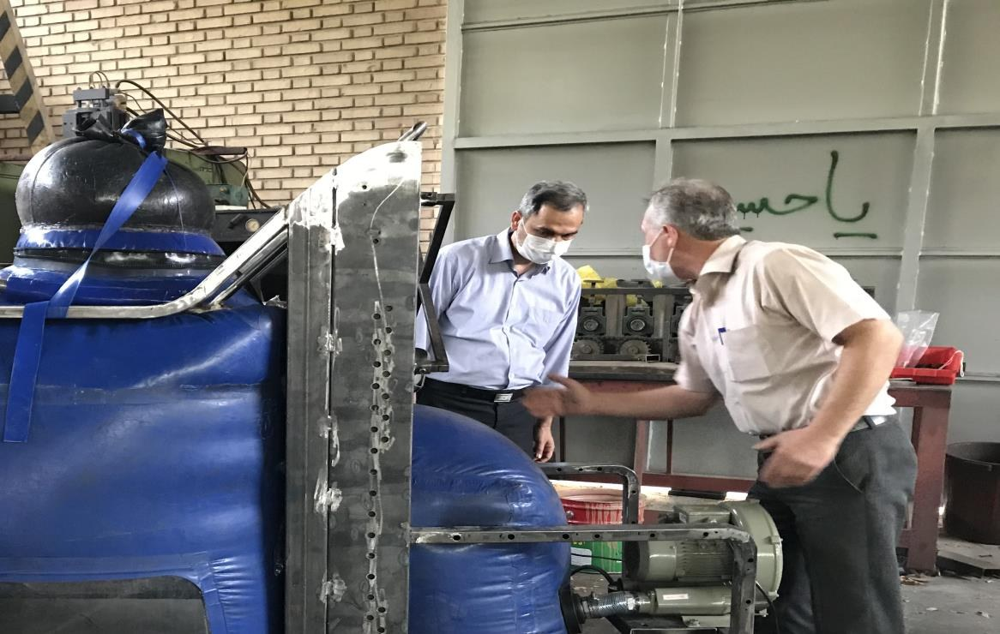
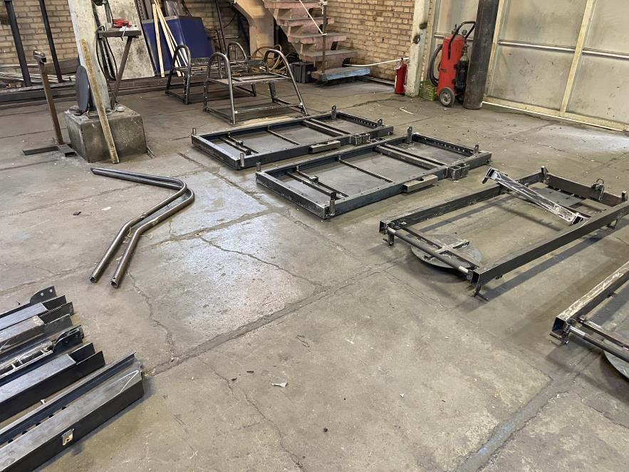
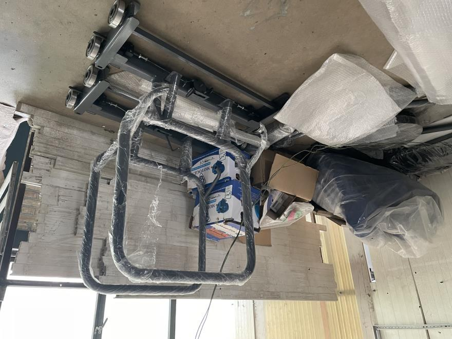

دربارهٔ باز آفرین ایده
شرکتی دانشبنیان که فناوری کاهش وزن مؤثر بدن را در ایران طراحی و به محصول تبدیل کرده است.

فناوری بومی- ساخت ایران
باز آفرین ایده یک شرکت دانشبنیان مستقر در تهران است که بر طراحی و ساخت تجهیزات تمرینی و توانبخشی تمرکز دارد. محصول اصلی این شرکت، تردمیل کاهندهٔ وزن GK است.
مأموریت ما «دستیابی به تناسب اندام و بازتوانی بدون آسیب» میباشد.
باور داریم فناوریای که پیشتر تنها در مراکز محدود و خارجی در دسترس بود، میتواند بهصورت بومی طراحی و در کشور تولید شود.
طراحی مستقل و دارای ثبت اختراع
اصل فیزیکی «کاهش وزن مؤثر بدن با فشار هوا» ریشه در پژوهشهای حوزهٔ فضایی دارد. تیم مهندسی باز آفرین ایده این اصل را مبنای یک طراحی کاملاً مستقل قرار داد و دستگاه GK را از پایه مهندسی و تولید کرد.
این دستگاه دارای ثبت اختراع است و بهصورت بومی در ایران تولید میشود. محصول GK مستقل بوده و هیچگونه وابستگی به برند خارجی ندارد.
سه نسل تا محصول نهایی
مدل اولیه (نمونهٔ آزمایشگاهی)
نخستین نمونه برای اثبات تکنولوژی کاهش وزن موثر بدن با فشار هوا بوده است.
مدل ثانویه
بازطراحی برای کاهش ابعاد و افزایش کاربردیبودن، با هدف امکان جابهجایی و نصب آسانتر
مدل نهایی (محصول تجاری)
مدل نهایی با ظاهر زیبا و امکانات کامل که امروز در مراکز ورزشی و درمانی مورد استفاده قرار می گیرد.



باشگاه و مراکز منتخب پذیرای GK
باشگاه های Winner Body
در شعبههای یوسف آباد، سعادت آباد، فرمانیه، ظفر و ...
پالادیوم اصفهان
مجموعه X Body ارومیه
نوآوری بومی
طراحی و مهندسی مستقل در داخل کشور، متناسب با نیاز بازار ایران
ایمنی و کیفیت
توجه به ایمنی کاربر در تمام مراحل طراحی، از ترمز اطمینان تا پایش ضربان قلب
پشتیبانی
همراهی با مجموعهها در نصب، راهاندازی و آموزش استفاده صحیح از دستگاه
با تیم باز آفرین ایده در ارتباط باشید
برای همکاری، سرمایهگذاری یا آشنایی بیشتر با محصول، خوشحال میشویم با شما گفتوگو کنیم.
تماس با ما